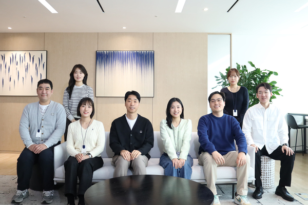
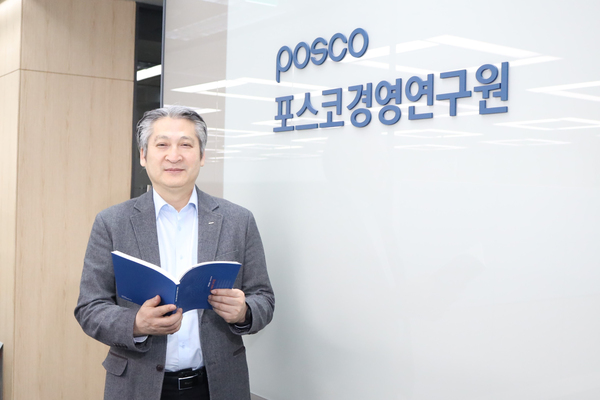

HR 커리어 개발의 패러다임이 바뀌고 있다💫
과거의 HR은 각 영역에서 복잡하고 정교했으나 지금 HR 제도들은 점점 단순해지고 있고 또 유연해지고 있어요!

🔎 HRD 인사이트
수집된 기사들을 바탕으로 HRD 인사이트를 입력하세요.
- 🤖 주요 기사에서 반복적으로 등장하는 변화 흐름을 정리해보세요.
- 🤝 교육 대상자에게 필요한 경험과 역량을 연결해보세요.
- 🏢 현업 적용 가능성이 높은 교육 설계 포인트를 도출해보세요.
🗞️ 함께 보면 좋은 기사
![[김동현 티오더 HR총괄 디렉터] HR 커리어 개발의 패러다임이 바뀌고 있다](../assets/thumbnails/onboarding-002-news-01.jpg)
[김동현 티오더 HR총괄 디렉터] HR 커리어 개발의 패러다임이 바뀌고 있다
권유진 기업교육의 이념 엄준하 Update 2026.07.10 금 이슈 이슈 발행인 메시지 스페셜 인터뷰 전문가칼럼 HRD아카이브 스페셜 리포트 현장 사례 실무자료 솔루션 이달의 도서 자료실 뉴스 멤버십 가입안내 멤버십 안내 멤버십 가입 월간HRD 광고 이달의 월간HRD e-Book HOME 기사 메일전송 홈 이슈 전문가...

Young Diner 몰입 온보딩
제245차 격정과 열정의 가스 Update 2026.07.10 금 이슈 이슈 발행인 메시지 스페셜 인터뷰 전문가칼럼 HRD아카이브 스페셜 리포트 현장 사례 실무자료 솔루션 이달의 도서 자료실 뉴스 멤버십 가입안내 멤버십 안내 멤버십 가입 월간HRD 광고 이달의 월간HRD e-Book HOME 기사 메일전송 홈 현장 사례...

[현대위아 교육문화팀] 개인의 성장과 조직의 변화를 선순환시키다
최용 11월호 교육 담당자인 Update 2026.07.10 금 이슈 이슈 발행인 메시지 스페셜 인터뷰 전문가칼럼 HRD아카이브 스페셜 리포트 현장 사례 실무자료 솔루션 이달의 도서 자료실 뉴스 멤버십 가입안내 멤버십 안내 멤버십 가입 월간HRD 광고 이달의 월간HRD e-Book HOME 기사 메일전송 홈 현장 사례 [...

[천성현 포스코경영연구원 연구위원] HR의 시대가 다가오는 이유와 HRD스탭의 기회 포착
2012 인적자원개발 제240차 학습하는 여성의 Update 2026.07.10 금 이슈 이슈 발행인 메시지 스페셜 인터뷰 전문가칼럼 HRD아카이브 스페셜 리포트 현장 사례 실무자료 솔루션 이달의 도서 자료실 뉴스 멤버십 가입안내 멤버십 안내 멤버십 가입 월간HRD 광고 이달의 월간HRD e-Book HOME 기사 메일전...
💡 정리하면
기사들을 종합한 결론을 입력하세요.
교육 기획할 때 활용할 포인트
- 교육 기획 포인트 1
- 교육 기획 포인트 2
- 교육 기획 포인트 3